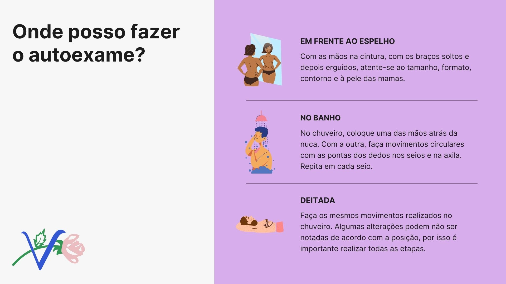
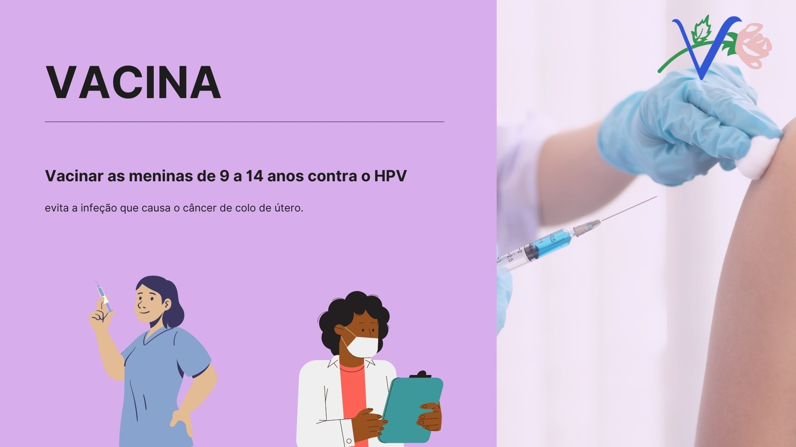
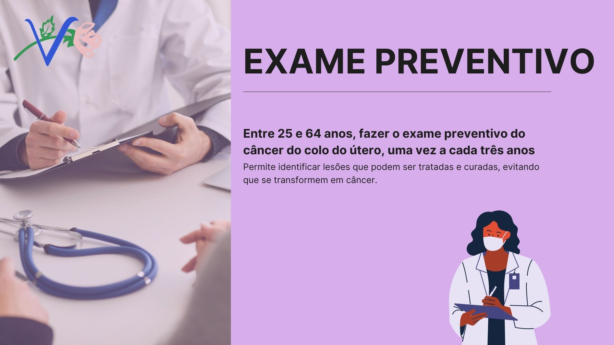

Câncer é um termo que abrange mais de 100 diferentes tipos de doenças malignas que têm em comum o crescimento desordenado de células, que podem invadir tecidos adjacentes ou órgãos a distância. Dividindo-se rapidamente, estas células tendem a ser muito agressivas e incontroláveis, determinando a formação de tumores, que podem espalhar-se para outras regiões do corpo. Os diferentes tipos de câncer correspondem aos vários tipos de células do corpo. Quando começam em tecidos epiteliais, como pele ou mucosas, são denominados carcinomas. Se o ponto de partida são os tecidos conjuntivos, como osso, músculo ou cartilagem, são chamados sarcomas.
O câncer surge a partir de uma mutação genética, ou seja, de uma alteração no DNA da célula, que passa a
receber instruções erradas para as suas atividades.
As alterações podem ocorrer em genes especiais, denominados proto-oncogenes, que a princípio são
inativos em células normais. Quando ativados,
os proto-oncogenes tornam-se oncogenes, responsáveis por transformar as células normais em células
cancerosas.
As células que constituem os animais são formadas por três partes: a membrana celular, que é a parte
mais externa; o citoplasma (o corpo da célula); e o núcleo,
que contém os cromossomos, que, por sua vez, são compostos de genes. Os genes são arquivos que guardam e
fornecem instruções para a organização das estruturas,
formas e atividades das células no organismo. Toda a informação genética encontra-se inscrita nos genes,
numa "memória química" - o ácido desoxirribonucleico (DNA).
É através do DNA que os cromossomos passam as informações para o funcionamento da célula.
O processo de formação do câncer é chamado de carcinogênese ou oncogênese e, em geral, acontece
lentamente, podendo levar vários anos para que
uma célula cancerosa prolifere-se e dê origem a um tumor visível. Os efeitos cumulativos de diferentes
agentes cancerígenos
ou carcinógenos são os responsáveis pelo início, promoção, progressão e inibição do tumor.
A carcinogênese é determinada pela exposição a esses agentes, em uma dada frequência e em dado período
de tempo, e pela interação entre eles.
Devem ser consideradas, no entanto, as características individuais, que facilitam ou dificultam a
instalação do dano celular. Esse processo é composto por três estágios:
O câncer pode surgir em qualquer parte do corpo. Entretanto, alguns órgãos são mais afetados do que outros; e cada órgão, por sua vez, pode ser acometido por tipos diferenciados de tumor, mais ou menos agressivos.
Saiba mais em: Inca - Tipos de câncer
O câncer não tem uma causa única. Há diversas causas externas (presentes no meio ambiente) e internas (como hormônios, condições imunológicas e mutações genéticas). Os fatores podem interagir de diversas formas, dando início ao surgimento do câncer. Entre 80% e 90% dos casos de câncer estão associados a causas externas. As mudanças provocadas no meio ambiente pelo próprio homem, os hábitos e o comportamento podem aumentar o risco de diferentes tipos de câncer. Entende-se por ambiente o meio em geral (água, terra e ar), o ambiente de trabalho (indústrias químicas e afins), o ambiente de consumo (alimentos, medicamentos) e o ambiente social e cultural (formas de agir e de se comportar). Os fatores de risco ambientais de câncer são denominados cancerígenos ou carcinógenos. Esses fatores alteram a estrutura genética (DNA) das células. As causas internas estão ligadas à capacidade do organismo de se defender das agressões externas. Apesar de o fator genético exercer um importante papel na formação dos tumores (oncogênese), são raros os casos de câncer que se devem exclusivamente a fatores hereditários, familiares e étnicos. Existem ainda alguns fatores genéticos que tornam determinadas pessoas mais suscetíveis à ação dos agentes cancerígenos ambientais. Isso parece explicar porque algumas delas desenvolvem câncer e outras não, quando expostas a um mesmo carcinógeno. O envelhecimento natural do ser humano traz mudanças nas células, que as tornam mais vulneráveis ao processo cancerígeno. Isso, somado ao fato de as células das pessoas idosas terem sido expostas por mais tempo aos diferentes fatores de risco para câncer, explica, em parte, o porquê de o câncer ser mais frequente nessa fase da vida.
A prevenção do câncer engloba ações realizadas para reduzir os riscos de ter a doença. O objetivo da prevenção primária é impedir que o câncer se desenvolva. Isso inclui evitar a exposição aos fatores de risco de câncer e a adoção de um modo de vida saudável. O objetivo da prevenção secundária é detectar e tratar doenças pré-malignas (por exemplo, lesão causada pelo vírus HPV ou pólipos nas paredes do intestino) ou cânceres assintomáticos iniciais.
Não fume, alimente-se bem, mantenha o peso corporal adequado, pratique atividades físicas, mulheres entre 25 e 64 anos devem fazer o exame preventivo do câncer do colo do útero a cada três anos, vacine contra o HPV as meninas de 9 a 14 anos e os meninos de 11 a 14 anos, vacine contra a hepatite B, evite a ingestão de bebidas alcoólicas, evite comer carne processada e evite exposição a agentes cancerígenos no trabalho.
O tratamento do câncer pode ser feito através de cirurgia, quimioterapia, radioterapia ou transplante de medula óssea. Em muitos casos, é necessário combinar mais de uma modalidade.
A cirurgia oncológica é um tipo de tratamento do câncer que consiste na retirada do tumor através de operações no corpo do paciente. Quando indicada, sua intenção é remover totalmente o tumor. O câncer em sua fase inicial pode ser controlado, ou mesmo curado, através do tratamento cirúrgico, atualmente considerado um dos tripés para o tratamento da doença, ao lado da quimioterapia e da radioterapia. Vale ressaltar que a abordagem múltipla do tratamento, associando diversas modalidades terapêuticas, costuma gerar melhores resultados em termos de cura, sobrevida e qualidade de vida. O ato cirúrgico pode ter finalidade curativa, sobretudo quando há detecção precoce do tumor e é possível sua retirada total; ou finalidade paliativa, quando o objetivo é de reduzir a quantidade de células tumorais ou de controlar sintomas que comprometam a qualidade da sobrevivência do paciente. Alguns exemplos de tratamentos paliativos são: a descompressão de estruturas vitais, o controle de hemorragias e perfurações, o desvio de trânsitos aéreo, digestivo e urinário, o controle da dor e a retirada de uma lesão de difícil convivência. O procedimento cirúrgico deve ser realizado sempre sob anestesia, em ambiente adequado e com material e equipe devidamente preparados para a intervenção. Além disso deve considerar simultaneamente aspectos técnicos, como o conhecimento sobre a doença e seu estágio de desenvolvimento, a retirada integral do tumor com cuidado para não deixar que a doença se espalhe durante o ato, a retirada de todos os locais para onde a doença possa ter se espalhado (gânglios e outros órgãos); bem como aspectos relacionados ao adequado preparo do paciente e seus familiares sobre as alterações fisiológicas e/ou mutilações que poderão ocorrer por causa do tratamento cirúrgico. A cirurgia oncológica também é uma forma de avaliar a extensão da doença. Ou seja, em alguns casos, o estadiamento do câncer só é possível de ser certificado durante o ato cirúrgico.
É um tipo de tratamento em que se utilizam medicamentos para combater o câncer.
Estes medicamentos se misturam com o sangue e são levados a todas as partes do corpo, destruindo as
células doentes que estão formando o tumor e impedindo, também, que se espalhem.
Como é feito o tratamento: Após a consulta médica e a liberação dos exames laboratoriais, sua
quimioterapia será marcada e você receberá do enfermeiro da central
de quimioterapia orientações sobre o seu tratamento, de acordo com a prescrição médica. O tratamento,
que será administrado por profissionais capacitados da equipe d
e enfermagem, pode ser feito das seguintes maneiras: Ambulatorial ou internado.
A quimioterapia causa dor? A única dor que você deverá sentir é a da "picada" da agulha na pele, na hora
de puncionar a veia para fazer a quimioterapia.
Algumas vezes, certos remédios podem causar uma sensação de desconforto, ardência,
queimação, placas avermelhadas na pele e coceira. Avise imediatamente ao profissional que estiver lhe
atendendo se você sentir qualquer um desses sintomas.
Por que devo continuar o tratamento mesmo não sentindo mais nada? O fato de você não estar sentindo mais
nada, não significa que as aplicações devam ser suspensas.
É um sinal que você está respondendo bem ao tratamento e o seu médico indicará o momento em que as
aplicações deverão terminar em função das características de sua doença.
A radioterapia é um tratamento no qual se utilizam radiações ionizantes (raios-x, por exemplo), que são
um tipo de energia para destruir as células do tumor ou impedir
que elas se multipliquem. Essas radiações não são vistas durante a aplicação e o paciente não sente nada
durante a aplicação.
Quais os benefícios?
A maioria dos pacientes com câncer é tratada com radiações e o resultado costuma ser muito positivo. O
tumor pode desaparecer e a doença ficar controlada, ou, até mesmo, curada.
Quando não é possível obter a cura, a radioterapia pode contribuir para a melhoria da qualidade de vida.
Isso porque as aplicações diminuem o tamanho do tumor,
o que alivia a pressão, reduz hemorragias, dores e outros sintomas, proporcionando alívio aos pacientes.
Em alguns casos, a radioterapia pode ser usada em conjunto com a quimioterapia, que utiliza medicamentos
específicos contra o câncer.
Isso vai depender do tipo de tumor e da escolha do tratamento ideal para superar a doença.
Durante o tratamento oncológico podem surgir efeitos colaterais. Por isso, uma vez por semana o paciente
terá uma consulta de revisão com seu(sua) médico(a)
e também uma consulta de enfermagem.
Como é feita?
O número de aplicações necessárias pode variar de acordo com a extensão e a localização do tumor, dos
resultados dos exames e do estado de saúde do paciente.
De acordo com a localização do tumor, a radioterapia pode ser feita de duas formas:
Radioterapia externa ou teleterapia: a radiação é emitida por um aparelho, que fica afastado do
paciente, direcionado ao local a ser tratado,
com o paciente deitado. As aplicações são, geralmente, diárias.
Braquiterapia: aplicadores são colocados pelo médico, em contato com o local a ser tratado.
A fonte de radiação sai do aparelho, percorre cateteres que são ligados aos aplicadores e irradia
próximo à área a ser tratada.
Depois, a fonte retorna ao aparelho fazendo o mesmo trajeto. Esse tratamento é feito no ambulatório
(podendo necessitar de anestesia),
geralmente uma vez por semana, durante três semanas.
O transplante de medula óssea é um tipo de tratamento proposto para algumas doenças que afetam as
células do sangue, como as leucemias e os linfomas e
consiste na substituição de uma medula óssea doente ou deficitária por células normais de medula óssea,
com o objetivo de reconstituição de uma medula saudável.
O transplante pode ser autogênico, quando a medula vem do próprio paciente. No transplante alogênico a
medula vem de um doador.
O transplante também pode ser feito a partir de células precursoras de medula óssea, obtidas do sangue
circulante de um doador ou do sangue de cordão umbilical.
Este tipo de tratamento é proposto em casos de doenças no sangue como a anemia aplástica grave (que se
caracteriza pela falta de produção de células do sangue na medula óssea);
mielodisplasias e em alguns tipos de leucemias (tipo de câncer que compromete os leucócitos, afetando
sua função e velocidade de crescimento).
Nesses casos, o transplante é complementar aos tratamentos convencionais, como a leucemia mieloide
aguda, leucemia mieloide crônica, leucemia linfoide aguda.
No mieloma múltiplo e linfomas, o transplante também pode ser indicado.
Como é feito o transplante: O processo tem início com testes específicos de compatibilidade, onde são
analisadas amostras do sangue do receptor e do doador,
buscando a melhor compatibilidade possível a fim de evitar processos de rejeição da medula pelo
receptor, bem como outras complicações como a agressão de células
do doador contra órgãos do receptor. A partir disto, o doador é submetido a um procedimento feito em
centro cirúrgico, sob anestesia, e tem duração de aproximadamente duas horas.
São realizadas múltiplas punções, com agulhas, nos ossos posteriores da bacia e é aspirada a medula.
Esta retirada não causa qualquer comprometimento à saúde.
Para receber o transplante, o paciente é submetido a um tratamento que ataca as células doentes e
destrói a própria medula.
Então, ele recebe a medula sadia como se fosse uma transfusão de sangue. Uma vez na corrente sanguínea,
as células da nova medula circulam e vão se alojar
na medula óssea, onde se desenvolvem.
Quais os possíveis riscos para o paciente e para o doador?
Para o paciente, os principais riscos se relacionam às infecções e às drogas quimioterápicas utilizadas
durante o tratamento.
Com a recuperação da medula, as novas células crescem com uma nova 'memória' e, por serem células da
defesa do organismo, podem reconhecer alguns órgãos do indivíduo como estranhos.
Esta complicação, chamada de doença enxerto contra hospedeiro, é relativamente comum, de intensidade
variável e pode ser controlada com medicamentos adequados.
No transplante de medula, a rejeição é relativamente rara, mas pode acontecer. Por isso, existe a
preocupação com a seleção do doador adequado e o preparo do paciente.
Para o doador, os riscos são poucos. Dentro de poucas semanas, a medula óssea estará inteiramente
recuperada.
Uma avaliação pré-operatória detalhada verifica as condições clínicas e cardiovasculares do doador
visando a orientar a equipe anestésica envolvida no procedimento operatório.
Os sintomas que podem ocorrer após a doação - dor local, astenia (fraqueza temporária), dor de cabeça,
em geral são passageiros e controlados
com medicamentos simples, como analgésicos.
Nesta publicação é possível encontrar respostas às principais dúvidas sobre os direitos sociais dos pacientes com câncer. Dentre elas, benefícios como auxílio-doença, tratamento fora de domicílio, saque do Fundo de Garantia do Tempo de Serviço (FGTS).
Referência: Inca - Instituto Nacional de Câncer, Ministério da Saúde.
 Veja aqui as orientações aos pacientes
Veja aqui as orientações aos pacientes